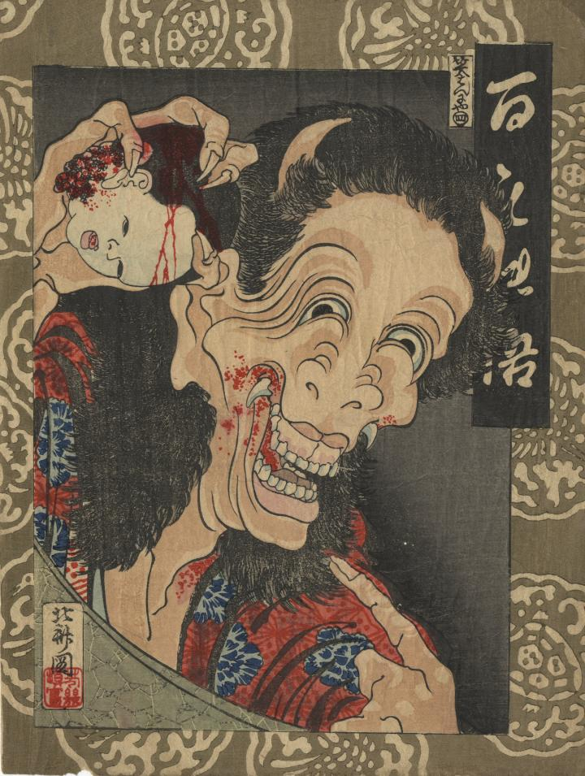

鬼の顔をした女が、子供の生首を手に握って笑っている。頭に角が生えている。口から牙が見える。口には血がついており、子供の生首にも血がついている。
著作者：芳幾／出典：親書誌：U426_nichibunken_0421：百もの語 笑はんにや；ヒャクモノガタリ ワライ ハンニャ／日付：2015／資源識別子：U426_nichibunken_0421_0001_0000
Copyright (c)2010- International Research Center for Japanese Studies, Kyoto, Japan. All rights reserved.